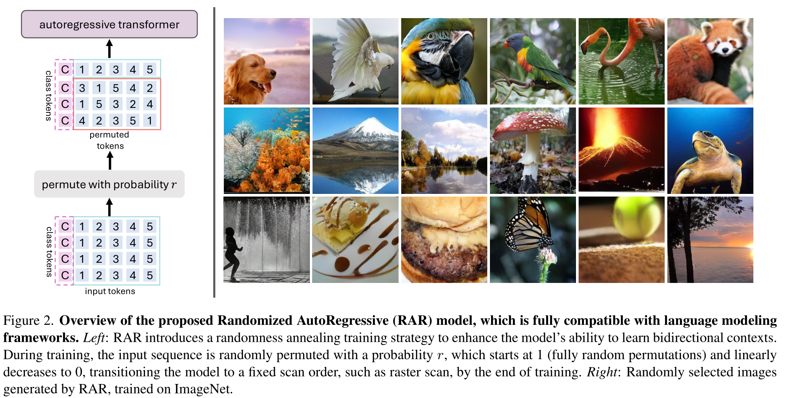
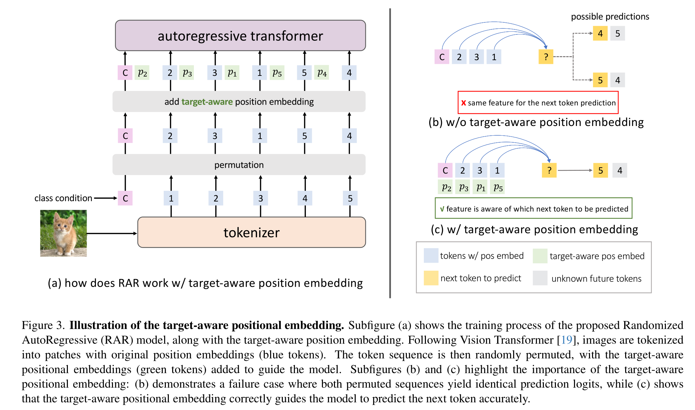
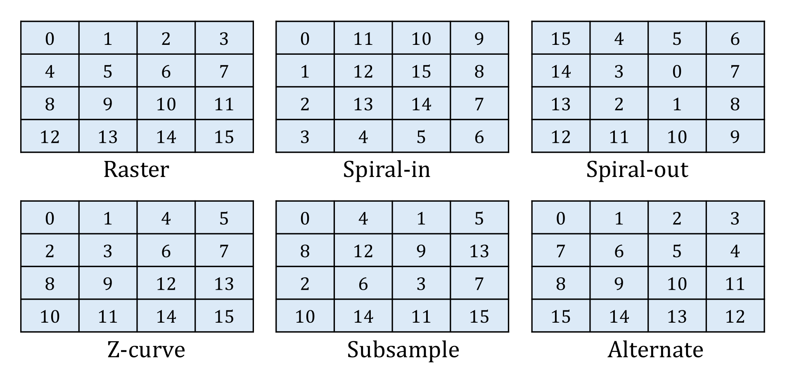
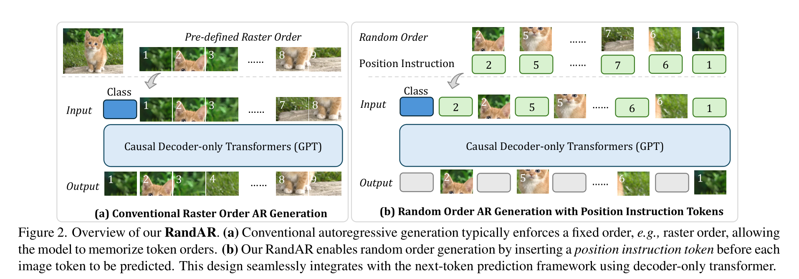
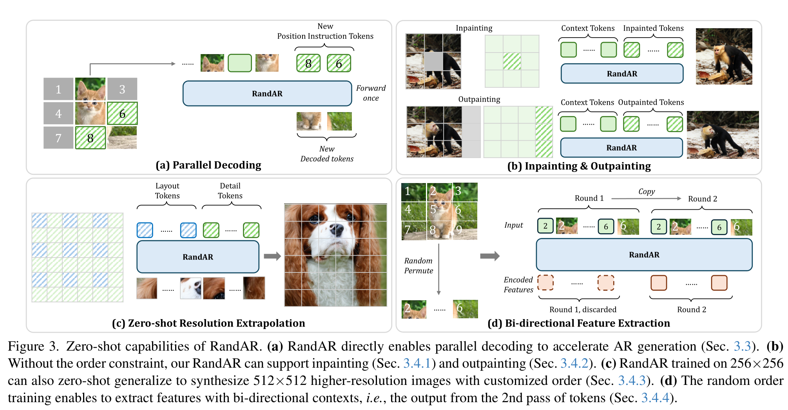
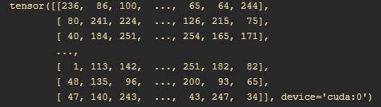
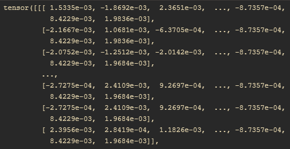

Randomized Autoregressive Visual Generation
RandAR: Decoder-only Autoregressive Visual Generation in Random Orders
TODO:
- [ ] randmized ar怎么求的期望
- [ ] rope怎么求的
- [ ] 512*512的图像在模型中表现如何
Randomized Autoregressive Visual Generation
Method


自回归模型通过最大化条件概率来生成序列数据。
自然语言拥有一个天然的顺序(大部分语言从左到右)，图像则没有。在所有可能的图像生成顺序中，以行为主的顺序被广泛采用，并且展现出良好的性能。
视觉信号拥有双向联系，因此需要有高效的全局内容建模。但是，传统的自回归模型在处理视觉信号时，需要将图像展平为序列，通过掩码给token序列强制加上一个单向的顺序，这会破坏图像的结构信息。
因此，双向注意力(bidirectional attention)在视觉模型中优于因果注意力(causal attention)。
作者提出了一种随机自回归建模方法，它将优化目标与双向上下文相结合：
作者采用了置换目标方法(permutation objective approach)，通过随机打乱token的顺序，使得模型在训练时需要考虑所有可能的token顺序，从而实现双向上下文建模。
- $S_t$代表所有序列[1,2,…,T]的所有可能的排列组合
- $\tau$代表一个特定的排列组合
- $\tau_t$代表排列组合中的第$t$个元素
- $\tau_{<t}$代表排列组合中的前$t-1$个元素
在训练过程中，由于模型参数 θ 在所有采样的分解顺序中是共享的，每个标记 $x_t$ 都会接触到所有可能的上下文，并学习与其他标记 $x_{\boldsymbol{i}}\:\forall i\neq t$之间的关系。
虽然置换目标在期望中允许在自回归框架内进行双向上下文学习，但在生成过程中仍然难以完全捕捉“全局上下文”。
目标感知位置编码
e.g. 考虑两种不同的排列组合
当生成倒数第二个token时，和的上文是相同的，因此模型无法区分这两种情况。
为了解决这个问题，作者引入了一组额外的位置信息嵌入，作者称之为目标感知位置信息嵌入。这些位置编码编码了关于下一个被预测的标记的信息。(最后一个token没有这个位置编码，因为它后面没有要预测的token了)
值得注意的是，目标感知的位置嵌入可以在训练结束后与原始位置嵌入合并，因为我们的方法最终收敛到一个固定的光栅扫描，因此在推理过程中不会增加参数或计算量。
随机退火（Randomized Annealing）
- 可能的排列组合数量过于庞大，可能会导致模型只专注于处理不同的排列组合，而不是提升生成质量
- 尽管图像可以以任意顺序处理，但某些扫描顺序往往优于其他顺序。前人有论文评估了六种不同的扫描顺序（行主序、内螺旋、外螺旋、Z-曲线、子采样和交替），并发现行主序（即光栅顺序）始终表现最佳，这一结果使其成为视觉生成中最广泛使用的顺序。

作者提出了随机退火方法，平衡排列的随机性与栅格顺序的已知有效性。提出了一个单独的参数r，用于使用随机排列的概率。训练开始时, 意味着该模型仅使用随机排列。在训练过程中，r 线性衰减到 0, 在训练结束时将模型转换为光栅顺序。具体来说，我们为 r 定义了一个训练计划，该计划由两个超参数控制：start 和 end，分别表示 r 开始退火和退火结束的训练周期。
公式5
epoch代表当前训练的轮数
简单来说，模型要么采用随机排列，要么采用光栅顺序。训练开始时，模型使用随机排列，$startend$时，模型使用光栅顺序。
伪代码 Pseudo-Code
Algorithm 1 PyTorch Pseudo-Code for Randomized AutoRegressive (RAR) Modeling
1
2
3
4
5
6
7
8
9
10
11
12
13
14
15
16
17
18
19
20
21
22
23
24
25
26
27
28
29
30
31
32
33
34
35
36
37
38
39
40
41
42
| class RAR(nn.Module):
def sample_orders(self, tokens, global_step):
orders = []
prob = 1.0 - min(1.0, max(0.0, (global_step - self.anneal_start) /
(self.anneal_end - self.anneal_start)))
for b in range(tokens.shape[0]):
if random.random() < prob:
orders.append(torch.randperm(tokens.shape[1]))
else:
orders.append(torch.arange(tokens.shape[1]))
return torch.stack(orders)
def permute(self, inputs, orders):
B, L = inputs.shape[:2]
indices = torch.arange(B).unsqueeze(1).expand(-1, L)
return inputs[indices, orders]
def forward(self, tokens, condition, global_step):
orders = self.sample_orders(tokens, global_step)
labels = self.permute(tokens.clone(), orders)
x = self.tok_emb(tokens) + self.pos_emb
x = self.permute(x, orders)
target_pos_emb = self.target_pos_emb.repeat(x.shape[0], 1, 1)
target_pos_emb = self.permute(target_pos_emb, orders)
target_pos_emb = target_pos_emb[:, :-1]
x = torch.cat([x[:, :-1] + target_pos_emb, x[:, -1:]], dim=1)
pred = self.transformers(x, condition)
loss = nn.CrossEntropy(pred[:, :-1], labels[:, 1:])
return loss
|
RandAR


论文目标是在最小化更改GPT样式的视觉自回归框架的条件下引入随机顺序生成，关键在于模型需要了解每个下一个标记的位置。
作者引入了一个位置编码，叫做position instruction token, 在每个图像token生成前记录它所在的位置。
特别的是，作者以光栅顺序生成图像token，然后随机打乱，并扔掉最后一个token。
- 是随机打乱后的序列中第i个token
- 是原始光栅顺序中第i个token
- 是第i个token的position instruction token
仿照2D-RoPE, 作者引入了可学习的嵌入e，并将其与下一个图像标记的二维坐标“旋转”结合起来进行预测。
RoPE的核心思想是，通过对位置编码进行旋转变换，使得每个位置的编码在生成过程中保持一定的周期性特征。这种方法在保持编码顺序信息的同时，还可以使得模型更好地捕捉序列中的相对位置关系。
RandAR 整体模型结构采取LLaMAGen的结构（只有decoder的transformer，使用2D-RoPE进行相对位置编码）
position instruction token
1
2
3
4
5
6
7
8
9
| def get_position_instruction_tokens(self, token_order):
position_instruct_tokens = self.pos_instruct_embeddings.view(1, 1, self.n_head, self.dim // self.n_head)
position_instruct_tokens = position_instruct_tokens.repeat(token_order.shape[0], self.block_size, 1, 1)
position_instruct_freqs_cis = self.freqs_cis[self.cls_token_num:].clone().to(token_order.device)[token_order]
position_instruct_tokens = batch_apply_rotary_emb(position_instruct_tokens, position_instruct_freqs_cis)
position_instruct_tokens = position_instruct_tokens.view(token_order.shape[0], self.block_size, self.dim).contiguous()
return position_instruct_tokens
|
token order

输出的position_instruct_tokens

在训练阶段，作者训练RandAR使用从所有可能的排列组合中选取随机的序列：
- 将256x256的图像转成N=16X16的离散tokens
- 这样就有种可能的排列组合
- 虽然在 ImageNet上训练 300 个 epoch 最多只能覆盖 种排序，但 RandAR 学习了以随机顺序生成图像的能力。
在推论阶段：
- （任意）给定一个推理顺序，首先计算相应的位置指令标记
- 通过标准的下一个标记预测迭代地采样预测的图像token
传统的decoder-only AR模型每次只能生成一个token，而RandAR可以根据之前的生成的token预测任何位置的token, 因此可以一次同时生成多个位置的token，从而需要更少的前向过程，提高推理速度。
Algorithm A: RandAR Training Pytorch-style Pseudo-Code
1
2
3
4
5
6
7
8
9
10
11
12
13
14
15
16
17
18
19
20
21
22
23
24
25
26
27
28
29
30
31
32
33
34
35
36
37
38
39
40
41
42
43
44
45
46
47
48
49
50
51
52
53
54
55
56
57
58
59
60
61
|
seq_len = h * w
raster_order_indices = torch.arange(seq_len).repeat(b, 1)
position_indices = random_permute(raster_order_indices)
image_tokens = model.token_embeddings[image_token_indices]
image_tokens = torch.gather(image_tokens.unsqueeze(-1), dim=1, position_indices.unsqueeze(-1))
cls_token = model.cls_embeddings[class_indices]
image_tokens = random_dropout(image_tokens, p=0.1)
cls_token = random_dropout(cls_token, p=0.1)
rope_freqs_cis = model.compute_rope_frequencies(b, h, w, base=10000)
rope_freqs_cis = rope_freqs_cis.flatten((1, 2))
rope_freqs_cis = rope_freqs_cis[position_indices]
pos_instruct_tokens = apply_2d_rope(model.shared_pos_embed, rope_freqs_cis)
x = torch.zeros(b, 1 + 2 * seq_len, d).to(image_tokens.device)
x[:, 0] = cls_token
x[:, 1::2] = pos_instruct_tokens
x[:, 2::2] = image_tokens
x_rope_freqs = torch.zeros(b, 1 + 2 * seq_len, head_dim // 2)
x_rope_freqs[:, 0] = model.class_rope_freqs
x_rope_freqs[:, 1::2] = rope_freqs_cis
x_rope_freqs[:, 2::2] = rope_freqs_cis
pred_logits = model(x, x_rope_freqs)
pred_logits = pred_logits[:, 1::2]
index_to_raster_order = torch.argsort(position_indices)
raster_pred_logits = torch.gather(pred_logits, dim=1, index_to_raster_order.unsqueeze(-1))
loss = cross_entropy(raster_pred_logits.view(-1, vocab_size), image_token_indices.view(-1))
return loss
|
上面算法中对分类的随机丢弃是无分类引导，对图像的随机丢弃是本论文提出的空间上下文引导(Spatial Contextual Guidance)
- 是RanAR模型
- 先前步生成的图像token
- 先前步生成的图像token进行了随机丢弃
- c 是类别
- 和 是超参数，用于控制空间上下文引导和分类引导的权重
Algorithm B: RandAR Parallel Decoding Pytorch-style Pseudo-Code.
1
2
3
4
5
6
7
8
9
10
11
12
13
14
15
16
17
18
19
20
21
22
23
24
25
26
27
28
29
30
31
32
33
34
35
36
37
38
39
40
41
42
43
44
45
46
47
48
49
50
51
52
53
54
55
56
57
58
59
60
61
62
63
64
65
66
67
68
69
70
71
|
seq_len = h * w
raster_order_indices = torch.arange(seq_len).repeat(b, 1)
position_indices = random_permute(raster_order_indices)
rope_freqs_cis = model.compute_rope_frequencies(b, h, w, base=10000)
rope_freqs_cis = rope_freqs_cis.flatten((1, 2))
rope_freqs_cis = rope_freqs_cis[position_indices]
pos_instruct_tokens = apply_2d_rope(model.shared_pos_embed, rope_freqs_cis)
max_token_length = 1 + seq_len * 2
model.setup_KVcache(max_token_length, batch_size=b)
class_embed = model.class_embedding(class_indices)
generated_code_indices = torch.zeros((b, seq_len), dtype=torch.long)
num_generated = 0
step_size = 1
x = torch.cat([class_embed, pos_instruct_tokens[:, 0:1]], dim=1)
x_rope_freqs = torch.cat([model.class_rope_freqs, rope_freqs_cis[:, 0:1]], dim=1)
kvcache_write_indices = torch.arange(2)
while num_generated < seq_len:
pred_logits = model(x, x_rope_freqs, kvcache_write_indices)
pred_logits = pred_logits[:, -step_size:]
sampled_indices = sample(pred_logits, temperature=1.0, topk=1)
generated_code_indices[:, num_generated:num_generated + step_size] = sampled_indices
sampled_tokens = model.token_embedding(sampled_indices)
step_size_next = CosineSchedule(num_generated, seq_len)
x_next = torch.zeros((b, 2 * step_size + step_size_next - 1, d))
x_next[:, 0] = sampled_tokens[:, 1]
x_rope_freqs_next = torch.zeros((b, 2 + step_size + step_size_next - 1, head_dim // 2, 2))
for i in range(step_size - 1):
x_next[:, 2 * i + 1] = pos_instruct_tokens[:, num_generated + i + 1]
x_next[:, 2 * i + 2] = sampled_tokens[:, i + 1]
x_rope_freqs_next[:, 2 * i + 1] = rope_freqs_cis[:, num_generated + i + 1]
x_rope_freqs_next[:, 2 * i + 2] = rope_freqs_cis[:, num_generated + i + 1]
num_generated += step_size
step_size = step_size_next
index_to_raster_order = torch.argsort(position_indices)
generated_code_indices = torch.gather(
generated_code_indices.unsqueeze(-1), dim=1, index=index_to_raster_order
)
img = vq_vae.decode(generated_code_indices)
|